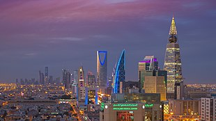

Economy of Saudi Arabia
This article needs additional citations for verification. (February 2022) |
|  Riyadh, the financial center of Saudi Arabia | |
| Currency | Saudi Riyal (SAR)[a] |
|---|---|
| Calendar year | |
Trade organisations | WTO, OPEC, and GCC |
Country group |
|
| Statistics | |
| Population | |
| GDP | |
| GDP rank | 18th (nominal, 2024) 17th (PPP, 2024) |
GDP growth | |
GDP per capita | |
GDP per capita rank | 35th (nominal, 2024) 15th (PPP, 2024) |
GDP by sector | (2017 est.)[7]
|
| 1.6% (2024)[8] | |
| 45.9 high (2013 est.)[7] | |
| |
Labour force | 13.8 million (2017 est.)[7] |
Labour force by occupation | (2005 est.)[7]
|
| Unemployment | |
Main industries | |
| External | |
| Exports | |
Export goods | crude petroleum, refined petroleum, polymers, industrial alcohols, natural gas (2019)[7] |
Main export partners |
|
| Imports | $213.0 billion (2021 est.)[7] |
Import goods | machinery and equipment, chemicals, packaged medicine, motor vehicles, textiles, broadcasting equipment, telephones[7] |
Main import partners |
|
Gross external debt | |
| Public finances | |
| 8.9% (of GDP) (2017 est.)[7] | |
| Revenues | 310 billion (2023 est.)[7] |
| Expenses | 330.8 billion (2023 est.)[7] |
All values, unless otherwise stated, are in US dollars. | |
{kind=link}
The economy of Saudi Arabia is the second-largest in the Middle East and the seventeenth-largest in the world.[6] The Saudi economy is highly reliant on its petroleum sector. Oil accounts on average in recent years for approximately 40% of Saudi GDP and 75% of fiscal revenue, with substantial fluctuations depending on oil prices each year.[13]
The kingdom has the second-largest proven petroleum reserves,[14] and the fourth-largest measured natural gas reserves.[15] Saudi Arabia is currently the largest exporter of petroleum in the world.[16] Other major parts of the economy include refining and chemical manufacturing from the oil reserves, much of which is vertically integrated in the state-owned enterprise, Saudi Aramco. Saudi Arabia is a permanent and founding member of OPEC.
In 2016, the Saudi government launched its Saudi Vision 2035 program to reduce its dependency on oil and diversify its economic resources.[17] By 2022, Saudi Arabia had only modestly reduced its dependence on oil.[13]
Monetary policy in Saudi Arabia is anchored by the fixed exchange rate of the Saudi Riyal to the U.S. Dollar.[18]
Economic overview
[edit]Saudi oil reserves are the second largest in the world (after Brazilian–Venezuelan oil reserves), and Saudi Arabia is the world's leading oil exporter and second-largest oil producer. Proven reserves, according to figures provided by the Saudi government, are estimated to be 260 billion barrels (41 km3), which is about one-quarter of the world oil reserves. Petroleum in Saudi Arabia is not only plentiful but also located under pressure close to the earth's surface, which makes it less expensive and more profitable to extract compared to other places.[19] The petroleum sector accounts for roughly 87% of Saudi budget revenues, 90% of export earnings, and 42% of GDP.[20] Saudi Arabia's oil reserves and production are largely managed by the state-owned corporation Saudi Aramco.[21]
Another 40% of the GDP comes from the private sector. An estimated 7.5 (2013) million foreigners work legally in Saudi Arabia[22] and play a crucial role in developing the Saudi economy, for example in the oil and service sectors. The government has been encouraging the growth of the private sector for many years to decrease the kingdom's dependence on oil and to increase employment opportunities for the swelling Saudi population. In recent decades, the government started allowing private sector activity and foreign investor participation in certain sectors, such as power generation and telecommunications, and acceded to the World Trade Organization. During much of the 2000s, high oil prices[23] allowed the government to post budget surpluses and boost spending on job training and education, infrastructure development, and government salaries.
With its absolute monarchy, large state sector, and supply of welfare benefits, the Saudi economy has been described asː
A bewildering (at least to outsiders) combination of a feudal fealty system and a more modern political patronage one. At every level in every sphere of activity, Saudis maneuver through life manipulating individual privileges, favours, obligations, and connections. By the same token, the government bureaucracy is a maze of overlapping or conflicting power centers under the patronage of various royal princes with their own priorities and agendas to pursue and dependents to satisfy.[24]
The following table shows the main economic indicators in 1980–2021 (with IMF staff estimates in 2022–2027). Inflation under 5% is in green.[25][26]
| Year | GDP
(in billion US$ PPP) |
GDP per capita
(in US$ PPP) |
GDP
(in billion US$ nominal) |
GDP per capita
(in US$ nominal) |
GDP growth
(real) |
Inflation rate
(in percent) |
Unemployment
(in percent) |
Gov. debt
(in % of GDP) |
|---|---|---|---|---|---|---|---|---|
| 1980 | 418.1 | 44,859.5 | 164.5 | 17,655.1 | n/a | n/a | ||
| 1981 | n/a | n/a | ||||||
| 1982 | n/a | n/a | ||||||
| 1983 | n/a | n/a | ||||||
| 1984 | n/a | n/a | ||||||
| 1985 | n/a | n/a | ||||||
| 1986 | n/a | n/a | ||||||
| 1987 | n/a | n/a | ||||||
| 1988 | n/a | n/a | ||||||
| 1989 | n/a | n/a | ||||||
| 1990 | n/a | n/a | ||||||
| 1991 | n/a | 39.4% | ||||||
| 1992 | n/a | |||||||
| 1993 | n/a | |||||||
| 1994 | n/a | |||||||
| 1995 | n/a | |||||||
| 1996 | n/a | |||||||
| 1997 | n/a | |||||||
| 1998 | n/a | |||||||
| 1999 | 4.3% | |||||||
| 2000 | ||||||||
| 2001 | ||||||||
| 2002 | ||||||||
| 2003 | ||||||||
| 2004 | ||||||||
| 2005 | ||||||||
| 2006 | ||||||||
| 2007 | ||||||||
| 2008 | ||||||||
| 2009 | ||||||||
| 2010 | ||||||||
| 2011 | ||||||||
| 2012 | ||||||||
| 2013 | ||||||||
| 2014 | ||||||||
| 2015 | ||||||||
| 2016 | ||||||||
| 2017 | ||||||||
| 2018 | ||||||||
| 2019 | ||||||||
| 2020 | ||||||||
| 2021 | ||||||||
| 2022 | n/a | |||||||
| 2023 | n/a | |||||||
| 2024 | n/a | |||||||
| 2025 | n/a | |||||||
| 2026 | n/a | |||||||
| 2027 | n/a |
History
[edit]{kind=link}
Saudi Arabia was a subsistence economy until the 1930s. In 1933, the Saudi government signed an oil concession agreement with the Standard Oil Company of California;[27] five years later, commercial volumes of oil were discovered in the kingdom.[28][29] The development of oil fields continued in Saudi Arabia, managed mainly by Arabian American Oil Company (Aramco), a company formed by the partnership of Texaco and Chevron.[30] In 1951, the first offshore field in the Middle East was established by Aramco at Raʾs Al-Saffāniyyah area.[31] By 1949, Saudi oil production reached 500,000 barrels per day (bpd) and rose rapidly to 1 million bpd in 1954.[32][33] Moreover, in 1951, Aramco started operating the Trans-Arabian Pipeline that moved oil from the eastern region of Saudi Arabia to the Mediterranean Sea through Jordan, Syria, and Lebanon. However, in 1981, this line was no longer used after a new line began operations that linked Jubail on the Persian Gulf and Yanbu on the Red Sea. The new pipe contributed greatly to speed up oil transport.[31] In 1960, OPEC was established, with Saudi Arabia as one of its founding members.[34] During the 1973 oil crisis, the price of oil rose from $3 per barrel to nearly $12, and the Saudi economy started growing rapidly,[35] with GDP increasing from approximately $15 billion in 1973 to almost $184 billion by 1981.[36] After gradually purchasing Aramco assets, the Saudi government nationalized the company in 1980. In 1988, Saudi Aramco was established to take over the responsibilities of Aramco.[37]
In 1980, the price of oil peaked, and demand started decreasing as a result of recessions in industrialized nations and more efficient oil use, which produced surpluses.[38] This created a worldwide oil glut, with the price of oil dropping from approximately $36 per barrel in 1980 to approximately $14 by 1986.[39] Saudi oil production, which had increased to almost 10 million barrels (1,600,000 m3) per day during 1980–81, fell 80% to about 2 million barrels per day (320,000 m3/d) in 1985.[40] Budgetary deficits developed, and the government drew down its foreign assets.[41] As a result of the oil glut and the pressure from declines in production, after 1985 Saudi Arabia started enforcing production quotas more harshly for the OPEC members.[42]
In June 1993, Saudi Aramco absorbed the state marketing and refining company (SAMAREC), becoming the world's largest fully integrated oil company. Most Saudi oil is exported by tankers from oil terminals at Ras Tanura and Ju'aymah in the Persian Gulf.[43]
{kind=link}
In the 1990s, Saudi Arabia experienced a significant contraction of oil revenues combined with a high rate of population growth. Per capita income fell from a high of $11,700 at the height of the oil boom in 1981 to $6,300 in 1998.[44] Taking into account the impact of the real oil price changes on the kingdom's real gross domestic income, the real command-basis GDP was computed to be 330.381 billion 1999 USD in 2010.[45] Increases in oil prices in the early 2000s helped boost per capita GDP to $17000 in 2007 dollars (about $7,400 adjusted for inflation),[46] but have declined since oil price drop in mid-2014.[47]
However, beginning in late 1997, Saudi Arabia again faced the challenge of low oil prices. Because of a combination of factors—the East Asian economic crises, a warm winter in the West caused by El Niño, and an increase in non-OPEC oil production—demand for oil decreased and pulled oil prices down by more than one-third.[48]
Saudi Arabia was a key player in coordinating the successful 1999 campaign of OPEC and other oil-producing countries to raise the oil price to its highest level since the (Persian) Gulf War by managing petroleum supply and production. That same year, Saudi Arabia established the Supreme Economic Council to formulate and better coordinate economic development policies to accelerate institutional and industrial reforms.[49]
Saudi Arabia joined the World Trade Organization (WTO) in 2005 after many years of negotiations.
Foreign investment
[edit]Before 2000, there were strict limits placed on foreign direct investment in Saudi Arabia. The 1979 Foreign Investment Act prohibited foreign ownership in some sectors of the economy, allowed foreign investment only if the investor qualified for a license based on their expertise, and gave priority to businesses that were Saudi-owned or partially Saudi-owned.[50]
However, in the mid-1990s, foreign ownership rules were relaxed, with investment sought in telecommunications, utilities, and financial services.[51] The 2000 Foreign Direct Investment Act made substantial changes to the rules on foreign investment, including allowing projects to be run by 100% foreign-owned companies for the first time.[50]
According to UNCTAD's June 2018 report, Saudi Arabia's foreign direct investment was only $1.4 billion in 2017, down from $7.5 billion the year before and as much as $12.2 billion in 2012. The fall in investment is attributed to negative intra-company loans by foreign multinationals and various divestments.[52] In the first quarter of 2018, net capital outflows were running at approximately 5% of GDP, compared to less than 2% of GDP in late 2016.[53] However, according to a report published in Trading Economics, in the second quarter of 2018, foreign direct investment in the country raised by $882 million.[54] Moreover, SAGIA's data indicate that licenses provided to foreign investment increased by 130% in the first quarter of 2018 as a result of reforms in the economy.[55]
As Saudi oil income declined in the late 2010s, the kingdom's international debt soared. In December 2018, Saudi Arabia announced it would be issuing bonds worth approximately 120 billion riyals ($32 billion) to cover its 4.2% GDP deficit of 131 billion riyals.[56] In January 2019, the kingdom sold bonds worth $7.5 billion.[57] In almost two and a half years, bonds worth $60 billion were sold by Saudi, which became one of the biggest borrowers globally.[58]
In September 2018, the Public Investment Fund completed a deal with a group of global lenders for a loan of $11 billion.[59] The deal raised more than initially planned and was the first time the PIF had incorporated loans and debt instruments into its funding.[60] According to data from Fitch Ratings, over two years starting from May 2016 Saudi Arabia went from having zero debt to raising $68 billion in dollar-denominated bonds and syndicated loans—one of the fastest rates among emerging economies.[61]
Foreign investments in the kingdom witnessed a rapid increase in the first quarter of 2019. The number of new licenses approved for foreign businesses grew 70% over 2018. Most licenses were approved for British and Chinese companies, which drove the increase.[62] In the first quarter of 2019, foreign investment in Saudi Arabia jumped by 28%.[63]
Diversification and the development plans
[edit]All the Saudi government's five-year plan since 1970 have called for diversifying the economy beyond oil, but with marginal success.[64]
The government has sought to allocate its petroleum income to transform its relatively undeveloped, oil-based economy into a modern industrial state, while maintaining the kingdom's traditional Islamic values and customs. Although economic planners have not achieved all their goals, the economy has progressed rapidly. Oil wealth has increased the standard of living of most Saudis. However, significant population growth has strained the government's ability to finance further improvements in the country's standard of living. Heavy dependence on petroleum revenue continues, but industry and agriculture now account for a larger share of economic activity. The mismatch between the job skills of Saudi graduates and the needs of the private job market at all levels remains the principal obstacle to economic diversification and development; about 4.6 million non-Saudis are employed in the economy.[65]
Saudi Arabia first began to diversify its economy to reduce dependency on oil in the 1970s as part of its first five-year development plan. Basic petrochemical industries using petroleum byproducts as feedstock were developed.[66] The fishing villages of al-Jubail on the Persian Gulf and Yanbu on the Red Sea were developed. However, their effect on Saudi Arabia's economic fortunes has been small.[67]
Saudi Arabia's first two development plans, covering the 1970s, emphasized infrastructure. The results were impressive—the total length of paved highways tripled, power generation increased by a factor of 28, and the capacity of the seaports grew by a factor of 10. For the third plan (1980–85), the emphasis changed. Spending on infrastructure declined, shifting instead to education, health, and social services. The share for diversifying and expanding productive sectors of the economy (primary industry) did not rise as planned, but the two industrial cities of Jubail and Yanbu—which were built around the use of the country's oil and gas to produce steel, petrochemicals, fertilizer, and refined oil products—were largely completed.[65]
In the fourth plan (1985–90), the country's basic infrastructure was viewed as largely complete, but education and training remained areas of concern. Private enterprise was encouraged, and foreign investment in the form of joint ventures with Saudi public and private companies was welcomed. The private sector became more important, rising to 70% of non-oil GDP by 1987. While still concentrated in trade and commerce, private investment increased in industry, agriculture, banking, and construction companies. These private investments were supported by generous government financing and incentive programs. The objective was for the private sector to have 70% to 90% ownership in most joint venture enterprises.[65]
The fifth plan (1990–95) emphasized consolidation of the country's defences; improved and more efficient government social services; regional development; and, most importantly, creating greater private-sector employment opportunities for Saudis by reducing the number of foreign workers.[65]
The sixth plan (1996–2000) focused on lowering the cost of government services without cutting them and sought to expand educational training programs. The plan called for reducing the kingdom's dependence on the petroleum sector by diversifying economic activity, particularly in the private sector, with special emphasis on industry and agriculture. It also continued the effort to "Saudize" the labour force.[65]
The seventh plan (2000–2004) focused more on economic diversification and a greater role of the private sector in the Saudi economy. For 2000–04, the government aimed at an average GDP growth rate of 3.16% each year, with projected growths of 5.04% for the private sector and 4.01% for the non-oil sector. The government also set a target of creating 817,300 new jobs for Saudi nationals.[65] By 2007, advertising expenditures had reached new peaks due to emphasis on value-added manufacturing.[68][failed verification]
In 2016, the main investing countries in Saudi Arabia were the US, UAE, France, Singapore, Kuwait, and Malaysia. They mainly invested in chemical industry, real estate, tourism, fossil fuels, automobiles, and machinery.[69] As part of its diversification, Saudi Arabia arranged major refinery contracts with Chinese and other companies.[70]
After Saudi Arabia became a member of the World Trade Organization (WTO) in 2005, the overall foreign investment environment in Saudi Arabia improved thanks to the kingdom's stable economy, massive oil reserves, high power of expenditure, developed infrastructure, reinforced finance, and banking system. Since then, and pursuant to its commitment to the WTO, Saudi Arabia has been developing trade-related policies and legislations. Moreover, foreign investment has been highly encouraged by Saudi Vision 2030 and its economic diversification.[69]
Since 2017, to boost the economy and decrease the country's dependency on oil, Crown Prince Mohammed bin Salman has introduced multiple changes, such as raising the prices of gasoline and electricity, levying new taxes, and prioritizing Saudi workers over foreign workers. However, some government officials claimed the policies were causing serious ill effects on the economy. Saudi businessmen reported a decline in sales for 2018, and a few blamed the government.[71]
In 2019, the Financial Times reported that the plans to float state-owned oil beneficiary Saudi Aramco were stranded between the company's attachment to the oil ministry and the desire to meet international standards. However, Energy Minister Khalid Al Falih has long maintained that Aramco's association with the state is a "win-win policy" for both parties.[72]
Saudi Arabia made plans to launch six "economic cities" (e.g., King Abdullah Economic City) in an effort to diversify the economy and provide jobs.[73] At a total construction cost of $60 billion (2013), they were "expected to contribute $150bn to the economy".[74] [75] However, these cities have failed to attract either the population or the financial investment that the government claimed they would.[76]
The privatization program Saudi Vision 2030 is running behind schedule. Oil prices have doubled since the government began to consider the program in 2015. Delay in Aramco's initial public offering further demonstrated a lack of urgency to privatize, even though in July 2018, the International Monetary Fund urged accelerating the process.[77]
According to many reports, the Saudi government is interested in granting more liberties to the foreign investment system and giving a 100% allowance to foreign investors to work in the wholesale and retail sector in certain cases.[69] The Saudi Ministry of Commerce and Investment expected that the kingdom would see an increase in the GDP per capita from US$20,700 to $33,500 by 2020.[78] However, the GDP per capita by 2020 had stagnated at $US20,000.[79]
Employment
[edit]As of 2008, roughly two-thirds of workers employed in Saudi Arabia were foreigners, and in the private sector the proportion was approximately 90%.[80] In January 2014, the Saudi government claimed it had lowered the 90% rate, doubling the number of Saudi citizens working in the private sector to 1.5 million (compared to 10 million foreign expatriates working in the kingdom).[81]
According to Reuters, economists "estimate only 30–40 percent of working-age Saudis hold jobs or actively seek work", although the official unemployment rate is only around 12 percent. Most Saudis with jobs are employed by the government, but the International Monetary Fund has warned that the government cannot support such a large payroll in the long term.[81][82] The government has announced a succession of plans since 2000 to deal with the imbalance by "Saudization" of the economy, but the foreign workforce and unemployment has continued to grow.[83] Since the beginning of 2017, however, Saudi Arabia has seen record numbers of foreign workers leaving the country as the Saudi government imposed higher fees on expatriate workers, with more than 677,000 foreigners leaving the kingdom. This has done little to lower the unemployment rate, which rose to 12.9 percent, the highest on record.[84]
Each year, about a quarter-million young Saudis enter the job market. With the first phase of Saudization into effect, 70% of sales jobs are expected to be filled by Saudis. However, the private sector still remains hugely dominated by foreigners. The rate of local unemployment is 12.9%, its highest in more than a decade.[60] According to a report published by Bloomberg Economics in 2018, the government needs to produce 700000 jobs by 2020 to meet its 9% unemployment target.[60]
One obstacle is social resistance to certain types of employment. Jobs in service and sales are considered totally unacceptable for citizens of Saudi Arabia—both to potential employees and customers.[85]
Non-petroleum resources sector
[edit]Saudi Arabia has natural resources other than oil, including small mineral deposits of gold, silver, iron, copper, zinc, manganese, tungsten, lead, sulfur, phosphate, soapstone, and feldspar.[67] The country has a small agricultural sector, primarily in the southwest where annual rainfall averages 400 mm (16 in). The country is one of the world's largest producers of dates. Prior to 2009, wheat was grown using desalinated water for irrigation,[67] but was phased out by 2016 due to costly water usage.[86] As of 2009, the livestock population amounted to 7.4 million sheep, 4.2 million goats, half a million camels, and a quarter of a million cattle.[67]
Although the jobs created by the roughly two million annual Hajj pilgrims do not last long, they employ more people than the oil industry—40,000 temporary jobs (butchers, barbers, coach drivers, etc.)—and generates US$2–3 billion in revenue.[87]
In 2008, the "Initiative for Saudi Agricultural Investment Abroad" was launched, leading to extensive billion-dollar purchases of large tracts of land around the world, including in Ethiopia, Indonesia, Mali, Senegal, and Sudan. Described as land-grabbing by critics, in various instances these purchases have also led to uproars in the respective countries. Competing industrializing nations with food security problems seeking agricultural land include China, South Korea, and India, as well as the Persian Gulf States of Kuwait, Qatar, and the UAE.[88][89][90][91][92]
Automotive
[edit]{kind=link}
In 2010, the KSU Gazal-1, an SUV built by students at King Saud University, became the first mass-produced vehicle manufactured domestically in Saudi Arabia.[93] In 2022, the US car company Lucid Motors announced plans to build an electric vehicle manufacturing plant in Jeddah.[94] Construction began in May 2022, and the plant will have capacity for 150,000 vehicles.[95]
Toyota is the leading brand in Saudi Arabia, accounting for 30% of car sales in the country; they are followed by Kia and Hyundai who together make up 26%, and Renault/Nissan/Mitsubishi at 9%. The American Big Three auto makers (Ford, GM, and Chrysler) comprise the remainder.[96] As for the quantity of vehicle units sold, in the first half of 2023, Toyota had the highest in the country with 112,584 and the second-most was the Hyundai badge with 47,218.[97]
Private sector
[edit]Saudi Arabia's private sector is dominated by a handful of big businesses in the service sector, primarily in construction and real estate, such as Olayan, Zamil, Almarai, Mobily, STC, SABIC, Sadara, Halliburton, Baker Hughes, Flynas, Hilton, Zain, Yanbu Cement, Alhokair, MBC, Mahfouz, Al Rajhi, and Alfanar. These firms are "heavily dependent on government spending", which is dependent on oil revenues.[98]
From 2003 to 2013, "several key services" were privatized—municipal water supply, electricity, telecommunications—and parts of education and health care, traffic control, and car accident reporting were also privatized. According to Arab News columnist Abdel Aziz Aluwaisheg, "in almost every one of these areas, consumers have raised serious concerns about the performance of these privatized entities."[99]
A relatively small sector until a boom in the 1980s,[100] the food service industry in Saudi Arabia today is valued at around $13 billion.[101]
To provide the best support for the private sector and entrepreneurs, the kingdom announced a decision approved by the Saudi Cabinet in July 2019 allowing businesses in the country to be given the option to remain open 24 hours a day.[102] As of 2023, the average monthly salary for Saudis working in the private sector is SR9600, up 45% from SR6600 in the year 2018.[103]
Regional GDP
[edit]Data are for the year 2022. Data calculated by dividing total GDP with provided percentage.[104][105]
| Ranking | Province | GDP (billion US$) |
Percentage of total GDP |
|---|---|---|---|
| 1 | Eastern | 243.793 | 22% |
| 2 | Riyadh | 243.793 | 22% |
| 3 | Mecca | 144.059 | 13% |
| 4 | Rest of provinces | 476.504 | 43% |
| 5 | 1,108.149 | 100% |
Trade
[edit]{kind=link}
In April 2000, the government established the Saudi Arabian General Investment Authority to encourage foreign direct investment in Saudi Arabia. Saudi Arabia maintains a negative list of sectors in which foreign investment is prohibited, but the government planned to open some closed sectors such as telecommunications, insurance, and power transmission/distribution over time.[106]
Saudi Arabia became a full World Trade Organization (WTO) member on 11 December 2005.[107] In 2019, the government established the General Authority for Foreign Trade to enhance the kingdom's international commercial and investment activities.[108]
In early July 2020, Saudi Arabia announced the nomination of its former Minister of Economy and Saudi royal court adviser, Mohammad Al-Tuwaijri, for the role of WTO's director-general.[109] The nominations were made public about a month after the WTO reported the kingdom for copyrights infringement following distribution of pirated sports broadcasting content on the state-owned broadcast service, BeoutQ.[110] The nomination of al-Tuwaijri received criticism from human rights groups in mid-August 2020, demanding the rejection of the Saudi nominee due to the kingdom's violation of human rights in addition to his silence over it.[111] On 7 October 2020, Al-Tuwaijri, along with other nominees from the UK and Kenya, lost the bid for the role due to lack of support, as compared to the nominees from Nigeria and South Korea who qualified for the final round of selection.[112]
Saudi Arabia is part of the following trade organizations:
- World Trade Organization (WTO)[107]
- International Monetary Fund (IMF)[113]
- International Chamber of Commerce (ICC)[114]
- International Organization for Standardization (ISO)[115]
- World Customs Organization (WCO)[116]
Challenges
[edit]Among the challenges to the Saudi economy include halting or reversing the decline in per capita income, improving education to prepare youth for the workforce and providing them with employment, diversifying the economy, stimulating the private sector and housing construction, and diminishing corruption and inequality. In answer to the question of why the Saudi economy is so dependent on foreign labor, the UN Arab Human Development Report blamed stunted social and economic development inhibited by lack of personal freedom, poor education, government hiring based on factors other than merit, and the exclusion of women.[117]
Income drop
[edit]Despite possessing the second largest petroleum reserves in the world, per capita income dropped from approximately $18,000 at the height of the oil boom (1981) to $7,000 in 2001, according to one estimate.[118] As of 2013, due to the rapid population growth of Saudi Arabia,[119] per capita income in Saudi was "a fraction of that of smaller Persian gulf neighbors", even less than petroleum-poor Bahrain.[120]
Unlike most developed countries, where GDP growth is a function of increases in productivity and inputs such as employment, in Saudi Arabia the fluctuation of oil prices is the most important factor in the growth or decline of domestic production. "Saudi reserves are steadily being depleted, and no significant new discoveries have been found to replace them," according to Middle East journalist Karen House.[as of?] Saudi population grew sevenfold from 1960 to 2010,[121] and petrol prices are subsidized and cost users less than equivalent quantities of bottled water.[122] With production stagnant, growth in population and domestic energy consumption means a decline in per capita income unless oil prices rise to match that growth.[120]
After 2015, Saudi Arabia embarked on several initiatives, including Vision 2030, aimed at reducing its dependency on oil by investing in other sectors such as tourism, entertainment, and technology. [[123]] . Despite a decline in oil GDP, Saudi Arabia's GDP is expected to grow due to the increase in non-oil GDP. In the second quarter of 2024, Saudi Arabia's GDP contracted by 0.4% year-on-year, primarily due to an 8.5% decline in oil-related activities. However, non-oil activities grew by 4.4%, contributing to a seasonally adjusted growth of 1.4% compared to the previous quarter.[124]
As of 2024, Saudi Arabia's GDP per capita has surpassed all other GCC countries except Qatar and the United Arab Emirates. Saudi Arabia's GDP per capita is estimated to be approximately $33,040 in nominal terms, ranking it 35th globally, and $70,333 in purchasing power parity (PPP) terms, ranking it as the 15th highest in the world [[17]]
Demographics
[edit]The Saudi population is young. About 51% of the total population are under the age of 25 (as of February 2012).[125] According to a 2013 report by the International Monetary Fund, up to 1.6 million young nationals of the Persian Gulf countries (of which Saudi Arabia is the largest) will enter the workforce from 2013 to 2018, but the economies of those countries will have jobs in the private sector for less than half (approximately 600,000).[126]
Education
[edit]According to The Economist, the Saudi government has attempted in past years to raise employment by forcing "companies to fill at least 30% of their positions" with Saudi citizens. However, "employers complained bitterly about the lack of skills among young locals; years of rote-learning and religious instruction fail to prepare them for the job market." However, many argue that young Saudis couldn't compete with foreigners due to the low compensation and salaries most companies had used to offer for employees from Asian, Indian subcontinent, and other Arab poor countries, which this cheap labor happily accepts; in addition to the bad work conditions, culture, and environment present in most of the Saudi private sector, largely due to the fact that it was initially modeled to accommodate very-low-income employees from other nations, not the Saudi medium-income and somewhat highly educated population. As a consequence, "the quota has now been dropped and replaced with a more flexible system".[127]
According to scholar David Commins, the kingdom depends "on huge numbers of expatriate workers to fill technical and administrative positions" in part because of an educational system that, despite "generous budgets", has suffered from "poorly trained teachers, low retention rates, lack of rigorous standards, weak scientific and technical instruction and excessive attention to religious subjects".[128][129][130]
A 2015 survey conducted by Bayt.com showed that over a quarter (28%) of professionals in North Africa and the Middle East believe that there is a skills shortage in their country of residence. This belief was even more prominent among respondents in Saudi Arabia (39%).[131]
Innovation
[edit]Saudi has not been a hotbed of technological innovation. The number of Saudi patents registered in the United States between 1977 and 2010 came to 382—less than twelve per year—compared to 84,840 patents for South Korea or 20,620 for Israel during that period.[132][133] However, in 2017 Saudi Arabia was granted 664 patents by the United States Patent and Trademark Office, ranking 23rd among 92 countries.[134][135] The number of granted patents was double that of all Arab countries combined during the same period.[136]
Bureaucracy
[edit]Business journalist Karen House criticized the Saudi bureaucracy, explaining that someone seeking to start a business in Saudi Arabia:
has to complete innumerable applications and documents at multiple layers of multiple ministries, which invariably requires seeking favours from various patronage networks and accumulating obligations along the way, most probably including having to hire less-than-competent dependents of his patrons. Then, for any business of any size, government contracts, not private competition, are the financial lifeblood. So this means more patrons, more favours, and more obligations. Not surprisingly, Saudi businesses that can compete outside the protected Saudi market are few.[137]
Corruption
[edit]The cost of maintaining the Royal Family is estimated by some to be about US$10 billion per year.[67]
A 2005 survey by the Riyadh Chamber of Commerce found that 77% of businessmen polled felt they had to 'bypass' the law to conduct their operations. By 2012, "businessmen say it has only gotten worse".[138] Saudi Arabia has been severely criticized for failing to tackle money laundering and international terrorism financing. A report released by the Financial Action Task Force on 24 September 2018, says, "Saudi Arabia is not effectively investigating and prosecuting individuals involved in larger scale or professional [money laundering] activity" and is "not effectively confiscating the proceeds of crime".[139]
Poverty
[edit]Estimates of the number of Saudis below the poverty line range from between 12.7%[140] and 25%.[141] Press reports and private estimates as of 2013 "suggest that between 2 million and 4 million" of the country's native Saudis live on "less than about $530 a month" – about $17 a day – considered the poverty line in Saudi Arabia.[141][142]
The Saudi state discourages calling attention to or complaining about poverty. In December 2011, days after the Arab Spring uprisings, the Saudi interior ministry detained reporter Feros Boqna and two colleagues (Hussam al-Drewesh and Khaled al-Rasheed) and held them for almost two weeks for questioning after they uploaded a 10-minute video on the topic (Mal3ob 3alena, or 'We are being cheated') to YouTube.[143][144] Authors of the video claim that 22% of Saudis are considered to be poor (2009) and 70% of Saudis do not own their houses.[145] Statistics on the issue are not available through the UN resources because the Saudi government does not issue poverty figures.[146] Observers researching the issue prefer to stay anonymous[147] because of the risk of being arrested, like Feras Boqna.[144][148]
Housing
[edit]50% of Saudi Arabia's citizens owned their own home in 2017, a rise from 30% in 2011 but below the international average rate of 70%.[149] In 2011, analysts estimated 500,000 new homes per year were needed to match the growth in Saudi population, but as of early 2014 only 300,000 to 400,000 houses per year were being built.[150]
One problem is that the government Real Estate Development Fund (REDF)—which provides 81% of all loans for housing—had an 18-year waiting list for loans due to pent-up demand. Another is that the REDF's maximum loan is 500,000 SR ($133,000), while in 2012 the average price for a small free-standing home in Riyadh is more than double that—1.23 million SR ($328,000).[151] However, as part of the economic reforms undertaken by the government to enhance national living standards, new funding solutions have been established to boost the mortgages for existing and new borrowers to help finance their housing plans. This was announced in August 2018 by the Minister of Housing, Mr. Majed Al-Hogail.[152]
A major reason for the high cost of housing is the high cost of land. In urban areas, the price of land has been bid up because nearly all of it is owned by the Saudi elite (members of the royal family or other wealthy Saudis), who have lobbied the government for land "giveaways".[150] Landlords have seen prices rocket by 50% from 2011 to 2013.[150] The owners benefit from these price increases as they hold the land for future development.[153][154] To deal with the key "land banking" issue, the Minister of Housing suggested in 2013 that vacant property within city limits could be subject to a tax. However, no firm plans for any tax have been unveiled.[150]
Private sector growth
[edit]In 2018, the imposition of a 5% value-added tax (VAT) brought private-sector growth to a halt. Consumer spending was also restrained after a sharp increase in prices for energy, electricity, and water earlier in 2018. The kingdom witnessed a mass departure of around 750,000 foreign workers after imposing new government levies on ex-pat workers. The government is also forcing small-business owners to hire Saudi nationals at comparatively higher wages than foreign workers. Gaining money from large, direct foreign investments is also not working in favor of the government. Rich Saudis are reluctant to invest within the kingdom due to the fear of triggering government scrutiny.[155]
On 11 May 2020, the government announced that it would triple the kingdom's VAT on goods and services, raising it from 5% to 15%.[156] It also stated that the increase in VAT—introduced due to the country's current financial crisis due to plummeting oil prices and impact of coronavirus—would also be followed by a cut in monthly allowance for state workers worth approximately $266, and financial benefits for contractors.[157] Aramco decreased the production of its Arab Light grade of crude oil by a significant amount[by how much?] to be shipped to Asia. The firm also cut down oil pricing for its US buyers following wavering demand for fuel due to the global relapse of the coronavirus pandemic.[158]
According to the General Authority for Statistics, Saudi Arabia's inflation accelerated to 6.2% in August 2020, as compared to the same month last year. The report states that the annual inflation rate increased from only 0.5% (in June) to 6.1% (in July), before the increase of VAT to 15% from 5% was introduced, effective from 1 July 2020.[159]
Investment
[edit]Saudi Arabia has two stock exchanges, the Tadawul and The Saudi Parallel Market (Nomu), whose financial markets are regulated by the Capital Market Authority.[160][161] The stock market capitalization of listed companies in Saudi Arabia is valued at $2.22 trillion. According to the International Institute for Management Development, Saudi Arabia experienced the largest improvement in business competitiveness of all countries in 2019; the kingdom rose 13 places to 26th in the world.[162]
Doing business
[edit]Saudi Arabia is among the countries with the most notable improvement in doing business, according to the World Bank Group's "Doing Business" 2020 report. The country jumped 30 places to rank 62nd in ease of doing business, compared to the previous year.[163][164][165] Previously, the kingdom had been declining in the overall rankings, from 22nd in 2013[166] to 92nd in 2018.[167]
According to the World Bank in 2019, Saudi Arabia had conducted reforms in eight areas of business: (1) starting a business, (2) getting construction permits, (3) getting electricity, (4) getting credit, (5) protecting minority investors, (6) trading across borders, (7) enforcing contracts, and (8) resolving insolvency.[164]
Saudi Arabian companies dominate 2009's "MEED 100", with companies listed on the Tadawul accounting for 29 out of the region's 100 biggest publicly quoted companies ranked by market capitalization. Just three of the 20 companies that have dropped out of the top 100 over the past year are listed on the Saudi stock exchange.[168]
Foreigners are allowed to wholly own limited liability companies in the majority of industries. Non-Saudi nationals are required to obtain a foreign capital investment license from the Saudi Arabian General Investment Authority.[169]
With a total of 291 foreign investor licenses issued in the second quarter of 2019, the kingdom has witnessed an increase in international investment, reflecting the economic reforms under the Saudi Vision 2030. Obtaining a foreign investor license became more straightforward as it requires only two documents, and it is processed in three hours.[170]
Companies
[edit]Saudi Aramco
[edit]Saudi Aramco (officially the Saudi Arabian Oil Co.) is Saudi Arabia's national oil, petroleum, and natural gas company headquartered in Dhahran.[171][172][173] Saudi Aramco was listed for public trading on 10 December 2019 and had a valuation as of US$2 trillion as of 12 December 2019.[174]
Saudi Aramco has both the second largest proven crude oil reserves, which it claims to be more than 260 billion barrels (4.1×1010 m3), and the largest daily oil production.[175] The company operates the world's largest single hydrocarbon network, the Master Gas System. Its yearly production is 3.479 billion barrels (553,100,000 m3),[176] and it manages over 100 oil and gas fields in Saudi Arabia, including 284.8 trillion standard cubic feet (scf) of natural gas reserves.[176] Saudi Aramco owns the Ghawar Field, the world's largest oil field, and the Shaybah Field, another one of the world's largest oil fields.[177]
On 16 November 2020, Saudi Aramco announced hiring banks to sell dollar-denominated bonds with the aim of improving finances after the coronavirus pandemic caused a sharp fall in the global demand for crude oil. Aramco's multi-tranche offer was set to run between 3 and 50 years, depending on the market conditions. The banks hired for the transaction included Citi Bank, Goldman Sachs International, HSBC, JP Morgan, Morgan Stanley and NCB Capital.[178] Other banks involved in the deal included BNP Paribas, BOC International, BofA Securities, Credit Agricole, First Abu Dhabi Bank, Mizuho, MUFG, SMBC Nikko and Societe Generale.[179]
In 2021, Saudi Aramco made a net-income of 95.5 billion riyals ($25.5 billion) in the second quarter alone, which was the highest level since 2018.[180]
SABIC
[edit]The Saudi Arabian Basic Industries Corporation (SABIC was established by a royal decree in 1976 to produce chemicals, polymers, and fertilizers. In 2008, SABIC was Asia's largest (in terms of market capitalization) and most profitable publicly listed non-oil company, the world's fourth-largest petrochemical company, the second-largest producer of ethylene glycol and methanol in the world, the third-largest producer of polyethylene and overall the fourth-largest producer of polypropylene and polyolefin. It ranked 186th as the world's largest corporation on the Fortune Global 500 for 2009. Standard & Poor's and Fitch Ratings claimed SABIC to be the world's largest producer of polymers and the Persian Gulf region's largest steel producer for 2005 and assigned SABIC an "A" corporate credit rating. In 2008, Fortune 500 ranking records SABIC revenues at $40.2 billion, profits at $5.8 billion, and assets standing at $72.4 billion.[181]
Ma'aden (company)
[edit]Ma'aden was formed as a Saudi joint stock company on 23 March 1997 for the purpose of facilitating the development of Saudi Arabia's mineral resources. Ma'aden's activities have focused on its active gold business which has grown in recent years to include the operation of five gold mines: Mahd Ad Dahab, Al Hajar, Sukhaybarat, Bulghah, and Al Amar. Ma'aden is now expanding its activities beyond its gold business with the development of phosphates, aluminium, and other projects. In addition, since its formation, Ma'aden (through the Ministry of Petroleum and Mineral Resources) has collaborated with the government and local legislators to develop a regulatory framework for the governance of the mining industry.
See also
[edit]- Agriculture in Saudi Arabia
- Council of Economic and Development Affairs (Saudi Arabia)
- Energy in Saudi Arabia
- Entrepreneurship policies in Saudi Arabia
- List of Saudi cities by GDP per capita
- Tourism in Saudi Arabia
References
[edit]Notes
[edit]Citations
[edit]- ^ Strohecker, Karin (27 April 2016). "Saudi riyal peg pressure eases, but not gone". reuters.com. Reuters. Retrieved 30 September 2023.
- ^ Kirkland, Stephen (5 January 2016). "Saudi Riyal Peg Not Sustainable Amid Oil Slide, Commerzbank Says". bloomberg.com. Bloomberg L.P. Retrieved 30 September 2023.
- ^ "World Economic Outlook Database, April 2019". IMF.org. International Monetary Fund. Archived from the original on 22 December 2019. Retrieved 29 September 2019.
- ^ "World Bank Country and Lending Groups". datahelpdesk.worldbank.org. World Bank. Archived from the original on 28 October 2019. Retrieved 29 September 2019.
- ^ "GASTAT Portal". portal.saudicensus.sa. Retrieved 11 December 2023.
- ^ a b c d e f g h "World Economic Outlook Database, April 2024 Edition. (SA)". IMF.org. International Monetary Fund. 10 April 2024. Retrieved 2 May 2024.
- ^ a b c d e f g h i j k l m n o "Middle East: Saudi Arabia". cia.gov. Central Intelligence Agency. Archived from the original on 19 March 2021. Retrieved 5 March 2020.
- ^ https://www.stats.gov.sa/sites/default/files/CPI%20Mar%202024-EN.pdf Consumer Price Index, March2024
- ^ "Human Development Report 2023/2024" (PDF). United Nations Development Programme. 13 March 2024. Archived (PDF) from the original on 13 March 2024. Retrieved 15 June 2024.
- ^ "Employment to population ratio, 15+, total (%) (national estimate) – Saudi Arabia". data.worldbank.org. World Bank. Archived from the original on 31 July 2020. Retrieved 5 March 2020.
- ^ a b "Foreign trade partners of Saudi Arabia". The Observatory of Economic Complexity. Retrieved 11 May 2024.
- ^ "Monthly Statistics". www.sama.gov.sa. Archived from the original on 22 July 2021. Retrieved 24 October 2021.
- ^ a b Dept, International Monetary Fund Middle East and Central Asia (17 August 2022). "Saudi Arabia: Selected Issues". IMF Staff Country Reports. 2022 (275). doi:10.5089/9798400217548.002.A001 (inactive 4 February 2024).
{{cite journal}}: CS1 maint: DOI inactive as of February 2024 (link) - ^ "The World's Largest Oil Reserves By Country". WorldAtlas. Archived from the original on 9 May 2019. Retrieved 12 December 2018.
- ^ "Country Analysis Executive Summary: Saudi Arabia". eia.gov. Archived from the original on 13 July 2022. Retrieved 19 July 2022.
- ^ Workman, Daniel (30 November 2018). "Crude Oil Exports by Country". World's Top Exports. Archived from the original on 9 December 2018. Retrieved 12 December 2018.
- ^ a b Dept, International Monetary Fund Middle East and Central Asia (17 August 2022). "Saudi Arabia: Selected Issues". IMF Staff Country Reports. 2022 (275). doi:10.5089/9798400217548.002.A003 (inactive 4 February 2024).
{{cite journal}}: CS1 maint: DOI inactive as of February 2024 (link) - ^ Dept, International Monetary Fund Middle East and Central Asia (17 August 2022). "Saudi Arabia: Selected Issues". IMF Staff Country Reports. 2022 (275). doi:10.5089/9798400217548.002.A002 (inactive 4 February 2024).
{{cite journal}}: CS1 maint: DOI inactive as of February 2024 (link) - ^ Tripp, Culture Shock, 2003: p.113
- ^ "Saudi Arabia". Forbes. Archived from the original on 13 March 2018. Retrieved 23 February 2018.
- ^ "Who we are". Saudi Aramco. Archived from the original on 18 August 2018. Retrieved 18 August 2018.
- ^ "New plan to nab illegals revealed". Arab News. 16 April 2013. Archived from the original on 22 June 2018. Retrieved 30 April 2013.
- ^ Tripp, Culture Shock, 2009: p. vii
- ^ House, Karen Elliott (2012). On Saudi Arabia : Its People, Past, Religion, Fault Lines and Future. Knopf. p. 174.
- ^ "Report for Selected Countries and Subjects".
- ^ "Saudi Arabia – gdp". Indexmundi.com. Archived from the original on 19 October 2012. Retrieved 28 September 2012.
- ^ "1930s". Saudi Aramco. Archived from the original on 15 September 2018. Retrieved 18 August 2018.
- ^ Kingston, A.J. (2023). "Chapter 1: The Black Gold Rush: Saudi Arabia's Oil Revolution (Early 1900s)". House of Saud: Saudi Arabia's Royal Dynasty. Vol. Book 2: Oil, Power and Influence — House of Saud in the 20th Century (1900s–2000s). A.J. Kingston. ISBN 9781839384820.
- ^ Mababaya, Mamarinta P. (2002). The Role of Multinational Companies in the Middle East — The Case of Saudi Arabia. University of Westminster Press. p. 359. ISBN 9781581121728.
- ^ "Aramco: How The World's Most Important Energy Company Works". WSJ. Archived from the original on 19 August 2018. Retrieved 18 August 2018.
- ^ a b "Saudi Arabia – Economy". Encyclopedia Britannica. Archived from the original on 3 May 2015. Retrieved 4 February 2019.
- ^ "1940s". Saudi Aramco. Archived from the original on 19 August 2018. Retrieved 18 August 2018.
- ^ "1950s". Saudi Aramco. Archived from the original on 19 August 2018. Retrieved 18 August 2018.
- ^ "OPEC : Brief History". opec.org. Archived from the original on 9 May 2019. Retrieved 18 August 2018.
- ^ Tripp, Culture Shock, 2009: p. vi
- ^ "Saudi Arabia | Data". data.worldbank.org. Archived from the original on 17 August 2018. Retrieved 18 August 2018.
- ^ "1980s". Saudi Aramco. Archived from the original on 19 August 2018. Retrieved 18 August 2018.
- ^ Hershey, Robert (21 March 1982). "THE DARK SIDE OF THE OIL GLUT". The New York Times. Archived from the original on 19 August 2018. Retrieved 18 August 2018.
- ^ "OPEC crude oil price statistics annually 1960–2018 | Statistic". Statista. Archived from the original on 19 August 2018. Retrieved 18 August 2018.
- ^ Gamal, Rania El. "Facing new oil glut, Saudis avoid 1980s mistakes to halt price slide". U.S. Archived from the original on 19 August 2018. Retrieved 19 August 2018.
- ^ GDP per capita (PPP) shrunk by 0.8% on average during the 1980s, grew 2.1% during the 1990s and 4.4% during the 2000s. (source: GDP (PPP) per capita trend during 1980–2010) Annual imports grew 44% on average during the 1970s, but shrunk 1.9% during the 1980s, grew again 2.4% during the 1990s and 14% during the 2000s.(source: Saudi Arabian imports grew 14% during the 2000s Archived 19 August 2018 at the Wayback Machine)
- ^ Molchanov, Pavel (April 2003). "A Statistical Analysis of OPEC Quota Violations" (PDF). Duke Journal of Economics. XV: 9. Archived (PDF) from the original on 28 October 2018. Retrieved 19 August 2018.
- ^ "Saudi Arabia (09/98)".
- ^ "Country Profile Study on Poverty: Saudi Arabia" (PDF). jica.go.jp. Archived from the original (PDF) on 26 February 2008. Retrieved 26 February 2008.
- ^ Pierru, Axel; Matar, Walid (16 July 2012). The Impact of Oil Price Volatility on Welfare in the Kingdom of Saudi Arabia: Implications for Public Investment Decision-Making (Report). USAEE Working Paper No. 2110172. SSRN 2110172.
- ^ "CPI Inflation Calculator". Data.bls.gov.
- ^ "Crude Oil WTI (NYMEX) Price". nasdaq.com. Retrieved 16 March 2015.
- ^ Mabro, Robert (May 2009). "The Oil Price Crises of 1998–9 and 2008–9". ora.ox.ac.uk. Oxford Institute for Energy Studies. Retrieved 9 October 2023.
- ^ "World Atlas - About Saudi Arabia". www.travel docs.com. Archived from the original on 18 January 2023. Retrieved 23 June 2022.
- ^ a b Almahmood, Abdulaziz (December 2010). Foreign Direct Investment in Saudi Arabia: Joint Venture Equity Shares and Source Country Characteristics (PDF) (Thesis). Newcastle University Business School. p. 24-25. Archived (PDF) from the original on 18 January 2023. Retrieved 15 December 2022.
- ^ Tripp, Culture Shock, 2009: p. 225
- ^ "Saudi Arabia Suffers Shock Collapse in Inward Investment". Forbes. Archived from the original on 7 February 2019. Retrieved 7 June 2018.
- ^ "Is Saudi Arabia Unable Or Just Unwilling To Stem The Flow of Money Leaving The Country?". Forbes. Archived from the original on 20 November 2018. Retrieved 21 September 2018.
- ^ "Saudi Arabia Foreign Direct Investment (FDI) [2006 – 2018] [Chart-Data-Forecast]". ceicdata.com. Archived from the original on 24 December 2018. Retrieved 23 December 2018.
- ^ "New Measures of foreign Investment in Saudi Arabia". 11 June 2018. Archived from the original on 11 October 2018. Retrieved 23 December 2018.
- ^ "Saudi Arabia wants to sell $32 billion of bonds in 2019". Bloomberg Professional Services. Bloomberg. 20 December 2018. Archived from the original on 25 January 2019. Retrieved 20 December 2018.
- ^ "Saudi Arabia to Sell $7.5 Billion of Bonds in Two Parts". Bloomberg.com. Bloomberg. 9 January 2019. Archived from the original on 25 January 2019. Retrieved 9 January 2019.
- ^ "Saudi Arabia Sells More Than $7 Billion in Bonds". The Wall Street Journal. Archived from the original on 21 March 2019. Retrieved 9 January 2019.
- ^ Martin, Matthew (17 September 2018). "Saudi Arabia's Sovereign Wealth Fund Raises $11 Billion Loan". Bloomberg.
- ^ a b c Nereim, Vivian (18 September 2018). "Saudi Businesses Are Struggling to Hire Saudi Workers". Bloomberg.
- ^ Jones, Rory (17 October 2018). "Fate of Journalist Heightens Saudi Debt Worries". The Wall Street Journal. ISSN 0099-9660. Retrieved 18 October 2018.
- ^ "Bloomberg – Britain, China Lead Way in New Saudi Business Licenses". Bloomberg.com. 28 April 2019. Archived from the original on 30 June 2019. Retrieved 28 April 2019.
- ^ "Saudi Arabia sees first budget surplus since 2014". Arab News. 24 April 2019. Archived from the original on 26 April 2019. Retrieved 1 May 2019.
- ^ House, Karen Elliot (2012). On Saudi Arabia: Its People, Past, Religion, Fault Lines and Future. Alfred A. Knopf. p. 163. ISBN 978-0307473288. Archived from the original on 13 June 2021. Retrieved 13 February 2015.
every five-year plan since the first one in 1970 has called for diversifying the economy beyond oil, but oil is still supreme
- ^ a b c d e f "Saudi Arabia. Profile". 11/2001. US government. Archived from the original on 25 January 2020. Retrieved 12 May 2014.
- ^ "The Petrochemicals and Plastics Sector in the Kingdom of Saudi Arabia" (PDF). U.S.–Saudi Arabian Business Council. Archived from the original (PDF) on 12 December 2014. Retrieved 12 February 2015.
- ^ a b c d e Tripp, Culture Shock, 2009: p. 44
- ^ "Archived copy" (PDF). Archived from the original on 26 March 2009. Retrieved 20 December 2007.
{{cite web}}: CS1 maint: archived copy as title (link) CS1 maint: bot: original URL status unknown (link) - ^ a b c "SAUDI ARABIA: FOREIGN INVESTMENT". Santander, TradePortal. 2019. Archived from the original on 7 February 2019. Retrieved 4 February 2019.
- ^ Mahdi, Wael (17 January 2012). "Saudi Aramco to Invest $200 Billion in Refining, Exploration". Bloomberg. Archived from the original on 21 October 2012. Retrieved 19 January 2012.
- ^ "Saudi Arabia's Economic Overhaul Is Backfiring". The Wall Street Journal. Archived from the original on 5 April 2019. Retrieved 5 April 2019.
- ^ "Saudi Aramco battles oil ministry overuse of company funds". Financial Times. Archived from the original on 21 July 2019. Retrieved 20 June 2019.
- ^ "Construction boom of Saudi Arabia and the UAE". Archived from the original on 11 October 2007. Retrieved 7 December 2016.
{{cite web}}: CS1 maint: bot: original URL status unknown (link). tdctrade.com. 2 August 2007 - ^ "Saudi Arabia economic zones". MEED. 21 August 2013. Archived from the original on 2 April 2015. Retrieved 16 March 2015.
- ^ "Saudi Arabia's Four New Economic Cities". The Metropolitan Corporate Counsel. 6 February 2013. Archived from the original on 10 October 2017. Retrieved 16 March 2015.
- ^ "Saudi Arabia is giving itself an extreme makeover with 'giga-projects.' Will it work?". Los Angeles Times. 12 January 2023. Archived from the original on 18 January 2023. Retrieved 13 January 2023.
- ^ "It's Not Just Aramco, Saudi's Privatization Push Is Slowing Down". Bloomberg.com. Bloomberg News. 20 September 2018. Archived from the original on 21 September 2018. Retrieved 20 September 2018.
- ^ "Kingdom of Saudi Arabia". mci.gov.sa. Archived from the original on 6 November 2017. Retrieved 4 February 2019.
- ^ "GDP per capita (current US$) - Saudi Arabia | Data". data.worldbank.org. Archived from the original on 18 January 2023. Retrieved 13 January 2023.
- ^ House, Karen Elliott (2012). On Saudi Arabia : Its People, Past, Religion, Fault Lines and Future. Knopf. p. 157.
- ^ a b McDowall, Angus (19 January 2014). "Saudi Arabia doubles private-sector jobs in 30-month period". Reuters. Archived from the original on 18 September 2018. Retrieved 12 May 2014.
- ^ House, Karen Elliott (2012). On Saudi Arabia : Its People, Past, Religion, Fault Lines and Future. Knopf. p. 159.
- ^ House, Karen Elliott (2012). On Saudi Arabia : Its People, Past, Religion, Fault Lines and Future. Knopf. p. 161.
Over the past decade, the government has announced one plan after another to 'Saudize' the economy, but to no avail. The foreign workforce grows, and so does unemployment among Saudis. .... The previous plan called for slashing unemployment to 2.8% only to see it rise to 10.5% in 2009, the end of that plan period. Government plans in Saudi are like those in the old Soviet Union, grandiose but unmet. (Also, as in the old Soviet Union, nearly all Saudi official statistics are unreliable, so economists believe the real Saudi unemployment rate is closer to 40%)
- ^ Al Omran, Ahmed (10 July 2018). "Record numbers of foreign workers leave Saudi Arabia". Financial Times. Archived from the original on 18 August 2018. Retrieved 17 August 2018.
- ^ House, Karen Elliott (2012). On Saudi Arabia: Its People, past, Religion, Fault Lines and Future. Knopf. p. 172.
[At one department store, Al Haram, of] 150 employees, only 25 ... are Saudi. All the Saudis are either cashiers or managers. The store manager, Ali al Qahtani, a Saudi, insists that even if a Saudi asked to work in sales (and none has ...) he would not permit it. 'I would put him at reception or cashier,' he says, 'because Saudi society wouldn't accept a Saudi salesperson.' Indeed, a Saudi intellectual who lives in the kingdom but travels often to Europe and the United States recounts his embarrassment at being served by a Saudi waiter in a restaurant. '... I didn't know what to do, it was so embarrassing.'
- ^ Muhammad, Fatima (11 December 2014). "Saudi Arabia to stop wheat production by 2016". Saudi Gazette. Archived from the original on 6 December 2018. Retrieved 12 February 2015.
- ^ Tripp, Culture Shock, 2009: p. 150
- ^ "Saudi agricultural investment abroad – land grab or benign strategy?". Middle East Eye. Archived from the original on 3 April 2018. Retrieved 23 January 2018.
- ^ "Africa up for grabs, Saudi Arabia takes its share". Africa Faith and Justice Network. 17 November 2014. Archived from the original on 4 April 2018. Retrieved 23 January 2018.
- ^ Pearce, Fred (19 May 2012). "Land grabbers: Africa's hidden revolution". The Guardian. Archived from the original on 3 April 2018. Retrieved 23 January 2018.
- ^ "King Abdullah's Initiative for Saudi Agricultural Investment Abroad: A way of enhancing Saudi food security". farmlandgrab.org. 3 May 2010. Archived from the original on 5 April 2018. Retrieved 23 January 2018.
- ^ "What you should know about Saudi investment in African farmland". How We Made It in Africa. 4 July 2012. Archived from the original on 8 July 2015. Retrieved 23 January 2018.
- ^ "Saudi Arabia unveils 1st domestically made car". NBC News, Associated Press. Business News. 25 June 2010. Retrieved 23 September 2023.
- ^ "Gearing up for a 'Made in Saudi Arabia' Lucid EV". Arab News. 1 March 2022. Archived from the original on 18 January 2023. Retrieved 23 March 2022.
- ^ Oommen, Anup (19 May 2022). "Construction starts on Lucid's first electric vehicle factory in Saudi Arabia with investments of $3.4 billion". Arabian Business. Archived from the original on 8 June 2022. Retrieved 7 June 2022.
- ^ "Saudi Arabia Automotive Market". trade.gov. International Trade Administration. 13 September 2021. Retrieved 23 September 2023.
- ^ Kim, Il-Gue; Bae, Sungsu (18 September 2023). Nam, In-Soo (ed.). "Hyundai eyes Saudi EV plant as Korea bets on Middle East boom". amp.kedglobal.com. The Korea Economic Daily. Retrieved 23 September 2023.
- ^ House, Karen Elliott (2012). On Saudi Arabia: Its People, past, Religion, Fault Lines and Future. Knopf. p. 165.
- ^ Aluwaisheg, Abdel Aziz (29 September 2014). "When privatization goes wrong". Arab News. Archived from the original on 10 October 2017. Retrieved 29 September 2014.
- ^ Gassem, Lojien Ben (11 September 2021). "The growth of Saudi Arabia's food and beverage industry — from local startups to multinational chains". Arab News. Riyadh. Retrieved 5 October 2023.
- ^ "Saudi Arabia food service sector opportunities for U.S. companies". trade.gov. International Trade Administration. 9 August 2023. Retrieved 5 October 2023.
- ^ "Cabinet gives go-ahead for businesses to open 24/7 in Saudi Arabia". Arab News. 17 July 2019. Archived from the original on 17 July 2019. Retrieved 18 July 2019.
- ^ "Average monthly wages of Saudis in private sector jump 45% to SR9600 in 5 years". Okaz/Saudi Gazette. Riyadh. 19 September 2023. Retrieved 11 October 2023.
- ^ "Estimating Saudi Arabia's Regional GDP Using Satellite Nighttime Light Images" (PDF), www.kapsarc.org
- ^ "World Economic Outlook Database, October 2023 Edition. (SA)". IMF.org. International Monetary Fund. 10 October 2023. Retrieved 10 October 2023.
- ^ "Foreign Investment Act and Executive Rules | The Embassy of The Kingdom of Saudi Arabia". www.Saudiembassy.net. Archived from the original on 16 June 2022. Retrieved 23 June 2022.
- ^ a b "Kingdom of Saudi Arabia – Member information". World Trade Organization. Archived from the original on 21 April 2021. Retrieved 20 April 2021.
- ^ "New head of foreign trade thanks King for his trust". Saudigazette. 24 March 2019. Archived from the original on 9 July 2019. Retrieved 9 July 2019.
- ^ "Saudi Arabia nominates a candidate to head WTO: document". Reuters. 8 July 2020. Archived from the original on 9 July 2020. Retrieved 8 July 2020.
- ^ "Saudi Arabia – Measures Concerning the Protection of Intellectual Property Rights" (PDF). World Trade Organization. Archived (PDF) from the original on 17 June 2020. Retrieved 16 June 2020.
- ^ "WTO Urged To Reject Saudi Arabia's Nominee For Director General". Americans for Democracy and Human Rights in Bahrain. 17 August 2020. Archived from the original on 26 September 2020. Retrieved 17 August 2020.
- ^ Farge, Emma (7 October 2020). "Nigerian, South Korean make last round of WTO chief race – sources". Reuters. Archived from the original on 9 October 2020. Retrieved 7 October 2020.
- ^ "Membership of Key Economies in International Organisations". Kasinomics. Archived from the original on 16 January 2013. Retrieved 28 September 2012.
- ^ "ICC – The world business organization". Iccwbo.org. 21 February 2011. Archived from the original on 21 February 2011. Retrieved 28 September 2012.
- ^ "Members". ISO. Archived from the original on 3 May 2012. Retrieved 28 September 2012.
- ^ "WCO – Reports". Wcoomd.org. 3 May 2011. Archived from the original on 18 September 2012. Retrieved 28 September 2012.
- ^ Long, Culture and Customs, 2009: p. 206
- ^ Cordesman, Anthony H. (2003). Saudi Arabia Enters the Twenty-First Century, Volume 1. Greenwood. p. 244. ISBN 9780275980917. Archived from the original on 13 June 2021. Retrieved 5 October 2020.
- ^ Clark, Laura (4 January 2013). "Longform's Picks of the Week [Will Saudi Arabia Ever Change?]". Foreign Policy. Archived from the original on 23 April 2019. Retrieved 23 April 2019.
- ^ a b Eakins, Hugh (10 January 2013). "Will Saudi Arabia Ever Change?". New York Review of Books.
Despite Saudi control of the largest petroleum reserves in the world, decades of rapid population growth have reduced per capita income to a fraction of that of smaller Persian gulf neighbors. Event the people of Bahrain, a country with little oil that has roiled with unrest since early 2011, are wealthier.
- ^ "World Population Prospects: The 2010 Revision". Archived from the original on 11 June 2011. Retrieved 26 August 2014.
- ^ House, Karen Elliott (2012). On Saudi Arabia: Its People, past, Religion, Fault Lines and Future. Knopf. p. 245.
In a country where a gallon of gasoline at roughly 53 cents is cheaper than bottled water and government energy subsidies are roughly $35 billion annually, Saudi energy consumption is rising at what one energy official calls an 'alarming rate.'
- ^ "A vision for 2030", Arab Development Outlook, UN, pp. 1–16, 3 October 2016, doi:10.18356/753c8f70-en, ISBN 978-92-1-058409-8, retrieved 5 August 2024
- ^ "Economy records best reading since Q2 2023 in Q2". FocusEconomics. 31 July 2024. Retrieved 5 August 2024.
- ^ Murphy, Caryle (7 February 2012). "Saudi Arabia's Youth and the Kingdom's Future". Woodrow Wilson International Center for Scholars' Environmental Change and Security Program. Archived from the original on 26 February 2019. Retrieved 13 May 2014.
- ^ "Saudi Arabia needs private sector growth to stem youth unemployment, business leaders say". 3 December 2013. Fox News. Associated Press. Archived from the original on 24 September 2015. Retrieved 12 May 2014.
- ^ "Out of the comfort zone". The Economist. 3 March 2012. Archived from the original on 14 October 2017. Retrieved 13 May 2014.
- ^ Commins, David (2009). The Wahhabi Mission and Saudi Arabia. I.B.Tauris. p. 128.
Observers also note that in spite of generous budgets, Saudi education has been plagued by numerous problems: poorly trained teachers, low retention rates, lack of rigorous standards, weak scientific and technical instruction and excessive attention to religious subjects. Consequently, the kingdom has continued to depend on huge numbers of expatriate workers to fill technical and administrative positions.
- ^ Roy, Delwin A. (1992). "Saudi Arabia education: Development policy". Middle Eastern Studies. xxviii (3): 481, 485, 495.
- ^ Abir, Mordechai (1986). "Modern Education and the evolution of Saudi Arabia education". National and International Politics in the Middle East: Essays in Honour of Elie Kedouirie. Routledge. pp. 481, 485, 495.
- ^ The Middle East and North Africa Salary Survey – May 2015 Archived 4 March 2016 at the Wayback Machine, Bayt.com. Retrieved 29 June 2015
- ^ House, Karen Elliott (2012). On Saudi Arabia: Its People, past, Religion, Fault Lines and Future. Knopf. pp. 162–64.
- ^ Source: USPTO website accessed 17 May 2011
- ^ Debusmann, Bernd Jr. "Saudi Arabia leads Arab world in patents". ArabianBusiness.com. Archived from the original on 19 April 2018. Retrieved 10 March 2019.
- ^ "KSA ranks 23rd in number of patents granted by the US Patent and Trademark Office". Arab News. 17 April 2018. Archived from the original on 22 June 2018. Retrieved 10 March 2019.
- ^ "Saudi Arabia Granted 664 Patents in 2017; Double of All Arab Countries Combined". www.businesswire.com. 16 April 2018. Archived from the original on 20 July 2018. Retrieved 10 March 2019.
- ^ House, Karen Elliott (2012). On Saudi Arabia: Its People, Past, Religion, Fault Lines and Future. Knopf. p. 175.
- ^ House, Karen Elliott (2012). On Saudi Arabia: Its People, Past, Religion, Fault Lines and Future. Knopf. p. 167.
- ^ "Saudi Arabia Accused of Turning A Blind Eye To International Terrorism Financing By Global Watchdog". Forbes. Archived from the original on 3 February 2019. Retrieved 25 September 2018.
- ^ "Saudi Arabia has tenth lowest poverty rate worldwide, says World Bank". al-Arabiyya. Saudi Gazette. 3 November 2013. Archived from the original on 6 December 2018. Retrieved 2 October 2014.
- ^ a b Sullivan, Kevin (1 January 2013). "Saudi Arabia's riches conceal a growing problem of poverty". The Guardian. Washington Post. Archived from the original on 2 June 2016. Retrieved 2 October 2014.
In a country with vast oil wealth and lavish royalty, an estimated quarter of Saudis live below the poverty line
- ^ A 2003 survey by the Ministry of Social Affairs found 40% of all Saudi citizens live on less than 3000 Saudi riyals ($850) a month, (source:House, Karen Elliott (2012). On Saudi Arabia : Its People, past, Religion, Fault Lines and Future. Knopf. p. 159.), while 19% of Saudis live on less than 1800 SR (Saudi riyals) ($480) a month. (source: House, Karen Elliott (2012). On Saudi Arabia: Its People, past, Religion, Fault Lines and Future. Knopf. p. 179.
... according to a 2003 survey by the Ministry of Social Affairs.
) - ^ Gutman, Roy (4 December 2011). "Saudi dissidents turn to YouTube to air their frustrations". McClatchy Newspapers. Archived from the original on 23 April 2015. Retrieved 16 March 2015.
- ^ a b "Mal3ob 3alena: Poverty in Saudi Arabia English Version". YouTube. Archived from the original on 10 July 2017. Retrieved 16 March 2015.
- ^ "A foreign Saudi plot to expose foreign poverty in foreign Saudi". Lebanon Spring. 19 October 2011. Archived from the original on 3 January 2012.
- ^ "Poverty Hides Amid Saudi Arabia's Oil Wealth". NPR.org. NPR. Archived from the original on 25 November 2018. Retrieved 6 April 2018.
- ^ "Poverty exists in Saudi Arabia too | The Observers". France 24. 28 October 2008. Archived from the original on 1 April 2015. Retrieved 16 March 2015.
- ^ Hill, Amelia (23 October 2011). "Saudi film-makers enter second week of detention". The Guardian. London. Archived from the original on 6 July 2018. Retrieved 14 December 2016.
- ^ "Nearly 50% citizens own houses in Saudi Arabia". Arab News. 26 January 2018. Archived from the original on 5 July 2018. Retrieved 23 December 2018.
- ^ a b c d Sloan, Alastair. "Saudi Arabia's housing predicament". Middle East Monitor. Archived from the original on 4 March 2016. Retrieved 11 June 2014.
- ^ House, Karen Elliott (2012). On Saudi Arabia: Its People, Past, Religion, Fault Lines and Future. Knopf. p. 176.
- ^ "New mortgages to boost home ownership in Saudi Arabia". Arab News. 8 August 2018. Archived from the original on 26 August 2018. Retrieved 23 December 2018.
- ^ House, Karen Elliott (2012). On Saudi Arabia : Its People, Past, Religion, Fault Lines and Future. Knopf. p. 106.
A second youth video, Monopoly, highlighted the near impossibility of owning a home in Saudi Arabia because a monopoly on land ownership by royals and other wealthy Saudi has put the price of land out of reach of a majority of Saudis. It struck a responsive chord in the population.
- ^ House, Karen Elliott (2012). On Saudi Arabia: Its People, Past, Religion, Fault Lines and Future. Knopf. p. 151.
In or around population centres, much of the open land is owned by various princes or a few wealthy families who are holding it for future development and profit.
- ^ "Rising Oil Prices Are Bad News for Saudi Arabia". The Wall Street Journal. Archived from the original on 4 December 2018. Retrieved 25 September 2018.
- ^ "Saudi Arabia Triples on VAT to Counter the Economic Impact of COVID-19". Chelsea Andrew. 12 May 2020. Archived from the original on 22 October 2020. Retrieved 17 May 2020.
- ^ Yee, Vivian (16 May 2020). "Saudi Arabia's Big Dreams and Easy Living Hit a Wall". The New York Times. Archived from the original on 16 May 2020. Retrieved 16 May 2020.
- ^ "Saudis Reduce Oil Pricing in Sign Demand Recovery Struggling". Bloomberg.com. 5 September 2020. Archived from the original on 6 September 2020. Retrieved 5 September 2020.
- ^ "Consumer Prices up 6.2% in August2020" (PDF). General Authority for Statistics(GASTAT). Archived (PDF) from the original on 21 October 2020. Retrieved 7 August 2020.
- ^ "Nomu – Parallel Market". Tadawul. 2020. Archived from the original on 25 January 2020. Retrieved 17 January 2020.
- ^ "The Saudi Stock Exchange (Tadawul)". Tadawul. 2020. Archived from the original on 25 January 2020. Retrieved 17 January 2020.
- ^ "Saudi Arabia most improved economy for business". Arab News. 28 May 2019. Archived from the original on 29 May 2019. Retrieved 28 May 2019.
- ^ "Saudi Arabia sees most improvement in ease of doing business: World Bank". Arab News. 24 October 2019. Archived from the original on 25 October 2019. Retrieved 24 October 2019.
- ^ a b "Doing Business 2020: Saudi Arabia Accelerated Business Climate Reforms, Joins Ranks of 10 Most Improved". World Bank. Archived from the original on 24 October 2019. Retrieved 24 October 2019.
- ^ "Doing Business 2020 report" (PDF). World Bank. Retrieved 24 October 2019.
- ^ "Doing Business 2013" (PDF). Archived (PDF) from the original on 28 March 2018. Retrieved 2 February 2018.
- ^ "Doing Business 2018" (PDF). Archived (PDF) from the original on 6 September 2018. Retrieved 2 February 2018.
- ^ "Special Report: MEED 100 – The Middle East's top 100 listed companies in 2009 | Special Report". MEED. 1 March 2009. Archived from the original on 17 February 2012. Retrieved 28 September 2012.
- ^ Saudi Arabia Company Formation Healy Consultants Archived 18 May 2013 at the Wayback Machine Retrieved 3 September 2013.
- ^ "Saudi Arabia issued 5 new foreign investor licenses a day in Q2". Saudigazette. 11 September 2019. Archived from the original on 13 September 2019. Retrieved 12 September 2019.
- ^ The Report: Saudi Arabia 2009. Oxford Business Group. 2009. p. 130. ISBN 978-1-907065-08-8. Archived from the original on 29 June 2016. Retrieved 12 December 2015.
- ^ "Our company. At a glance". Saudi Aramco. Archived from the original on 17 June 2016. Retrieved 12 May 2014.
The Saudi Arabian Oil Co. (Saudi Aramco) is the state-owned oil company of the Kingdom of Saudi Arabia.
- ^ "Contact Us Archived 5 June 2012 at the Wayback Machine." Saudi Aramco. Retrieved on 5 November 2009. "Headquarters: Dhahran, Saudi Arabia Address: Saudi Aramco P.O. Box 5000 Dhahran 31311 Saudi Arabia"
- ^ Turak, Natasha. "Saudi Aramco shares surge 10% as historic IPO begins trading". CNBC.
- ^ "SteelGuru – News". Archived from the original on 8 April 2010.
- ^ a b "Saudi Aramco Annual Review 2010" (PDF). Archived (PDF) from the original on 6 August 2017. Retrieved 12 May 2014.
- ^ Helman, Christopher. "The World's Biggest Oil Reserves". Forbes. Archived from the original on 24 January 2013. Retrieved 26 August 2017.
- ^ Kerr, Simeon (16 November 2020). "Saudi Aramco to sell billions of dollars in international bonds". Financial Times. Archived from the original on 16 November 2020. Retrieved 16 November 2020.
- ^ "Saudi Aramco plans debt market comeback with multi-tranche bond deal". Reuters. Archived from the original on 16 November 2020. Retrieved 15 November 2020.
- ^ Wallace, Paul; Martin, Matthew (9 August 2021). "Saudi Aramco sees highest profit since 2018 as economies reopen". aljazeera.com. Archived from the original on 11 October 2021.
- ^ "SABIC climbing up the growth ladder". Arabnews.com. Archived from the original on 26 May 2013. Retrieved 28 September 2012.
{kind=link}
{kind=link}
Further reading
[edit]- Niblock, Tim (2007). The political economy of Saudi Arabia. Routledge. ISBN 978-0-415-42842-2.
- Colgan, Jeff D. 2021. Partial Hegemony: Oil Politics and International Order. Oxford University Press
External links
[edit]- Saudi Arabia. The World Factbook. Central Intelligence Agency.
- Saudi Arabia Economic Development at Curlie
- Saudi Arabia Export, Import, Trade Balance